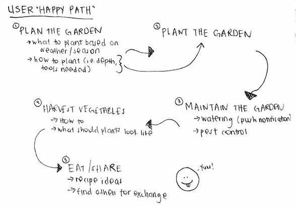

Sprout is a mobile app concept that uses augmented reality to allow users to plan and maintain their vegetable gardens. Our vision for this project was to provide more opportunities for people living in urban environments to start vegetable gardens to fit their own lifestyle and needs. This vision was a result of primary and secondary research, the former of which I conducted via interviews with existing gardeners I knew. Through this research, we defined our strategy: create a virtual world that can be replicated or mirrored in the real world.
Based on our research and vision, we started off by developing our user “happy path” and personas. From there, we conducted a feature brainstorm session. This involved filling a large amount of Post-It notes with any possible idea that came to mind, then grouping those ideas into various categories, which we synthesized down to three core features to build the app around. These features would comprise the MVP, and not only incentivize users, but provide them with the tools to plan and maintain their gardens in a fun and unique way, that’s built around a community. All additional features were saved for our product roadmap.
One of the biggest challenges we encountered was in the initial sketching phase. We’d all set out to sketch our own ideas based on the vision and features, but then had to determine which was the best approach. This took several sessions of deliberation and debate to narrow down all of our ideas. To further narrow our options, we ran some user tests.
For my own user testing, I used an app called Prototyping on Paper. My main concern was the augmented reality feature, because I wanted to make sure this would make sense to users. Fortunately, I found that majority of the participants in the test immediately understood what was happening, without requiring any guidance.
After gathering all the feedback from our paper prototypes, we moved onto creating higher fidelity wireframes and, finally, the user interface.
Since this was my first interactive project, it was extremely invaluable going through the full process from research and ideation, all the way through implementation. Each stage of the process revealed something new to our team that we used to build on and refine our product. One of the major takeaways was not to fall in love with the first idea, and when all else fails, test.
This project was completed by myself and five others; however, we all participated in each phase of the process except for the hi-fidelity wireframes and UI, which was done by one person. The work you see here is mine alone, except for the final phase (UI).